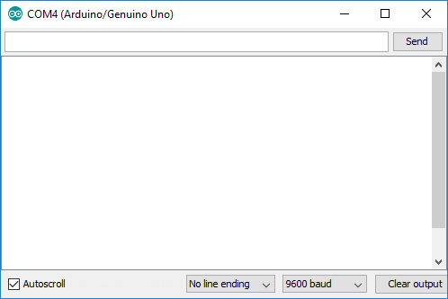
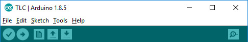

Learning Arduino
Using Arduino
For comparisons between methods in Python and Arduino click 'Code Comparison Explanations' from the top right of the nav bar or click here.
Defining your pins
Explanation
You should define the pins you use are using as constants (either by #define or const) so you can easily refer to them throughout code and easily change if neccessary. You should keep them all together at the top of your code.
Example
Using const:
const int REDLED = 2;
Using #define:
Variables
Explanation
You should define most the variables for data such as a threshold distance, or LDR sensor value to be used in comparisons, or button states, or the mode of operation you are currently in at the top of your program below your constants/pin constants/defines.Example
- Here I have declared and initialised a variable for the minimum distance for comparing againest ultrasonic sensor distance.
- I have also declared a variable called userInput which has not yet been initialised. This will used later to when getting userInput from the serial monitor (explained below).
void setup()
Explanation
The purpose of the void setup() function is to contain all the stuff we want to do when we start our Arduino application. This function is ran once at the beginning.
The two common things you do in the void setup() are:
- Setting pin modes (explained below)
- Beginning serial communication (explained below)
Example
pinMode(pin, mode)
Explanation
We use the pinMode(pin, mode) function to tell the Arduino how we want to use the pin. The common ones are OUTPUT and INPUT.
Example
pinMode(pin, mode) function calls go inside the void setup() from last section:
We specify the pin we want to address using our constant and specify the mode OUTPUT as we want to output through this pin. We use INPUT when we want to read data from a pin, for example when using the ultrasonic sensor.
void loop()
Explanation
The purpose of the void loop() function is to contain all the stuff we want to do over and over in our Arduino application. This function is ran forever after the void setup() has ran.
This is where we will read from our pins, and output to the world or serial monitor (explained below).
Example
This loop comes after the void setup(), an example is below:
delay(time_millieseconds)
Explanation
We use the delay(time_millieseconds) to 'pause' our program for a given time.
We can also use delayMicroseconds(time_microsends)
Example
delay(time_millieseconds) example:
delayMicrosends(time_microseconds) example:
digitalWrite(pin, value)
Explanation
digitalWrite(pin, value) 'writes' a value to the specified pin. This is so we can send a pulse with our ultrasonic sensor or turn an LED on for example. The value argument can be either LOW or HIGH.
We can call this function from any function, whether it be the void loop(), void setup() or one of our own. If we call it in the void setup(), it's typically to make definitely sure the pin is off and is not really neccesary.
Example
Usage:
Using our previous example from void loop() combined with delay:
digitalRead(pin)
Explanation
digitalRead(pin) gives the value currently being read from the specified pin.
Example
Usage:
Example using a button where we want to check the state of the button:
Serial communication
Serial communication is talking between the Arduino and another source. For this we will be using the serial monitor. This is where we can see variables/data from the Arduino or give the Arduino input.
The serial monitor can be opened by pressing ctrl + shift + m or by pressing the icon at the right, as shown below:
Explanation
Enabling Serial Communication
First, the Arduino needs to be told to use serial communication. This is done by typing Serial.begin(<baud_rate>) in our void setup() (example to the right).
Printing to Serial Monitor
Serial.println(<message>)to print a line of text and advance to the next lineSerial.print(<message>)to just print a line of text to the screen with no advance.
Reading from Serial Monitor
Serial.available()- this allows us to check if their is serial input to read, used with if statementsSerial.read()to read a byte (like a character)Serial.parseInt()to read an integerSerial.parseFloat()to read a float
More information on serial communication available here.
To print a string a non-string variable using one .print/.println, you must first convert the variable to a string, shown with the Serial.print in the 'Reading Examples' to the right.
Example
9600 and 115200 are common ones. Just make sure what you type is the same as the dropdown from the serial monitor.
Printing example:
Reading examples:
analogRead(pin)
Explanation
We use analogRead(pin) to read data from an analog component, such as a photoresistor. Will return a value between 0 and 1023.
Analog components must be connected to an 'analog in' pin on the Arduino or a digital pin with PWM (pins have ~ to denote this).
Example
Usage:
Example for say reading a value from LDR
Tones - tone(pin, frequency) and - noTone(pin)
Explanation
Using Tone
We usetone(pin, frequency, [duration]) to generate a tone to be sent to a speaker of some sort connected to the specified pin with a specifed frequency. The duration is optional, if not specified it will go forever.
Stopping the Tone
To stop the turn we use noTone(pin).
Example
Usage:
Example just making a buzzer buzz for half a second every half second:
pulseIn(pin, value)
Explanation
We use pulseIn(pin, value) to time how long a pulse lasts. We specify a pin to listen on and value is for the type of signal we want to time (HIGH or LOW).
Once a signal of <value> has been detected, it will time how long (in microseconds) it lasts till the opposite of <value> is detected.
Example